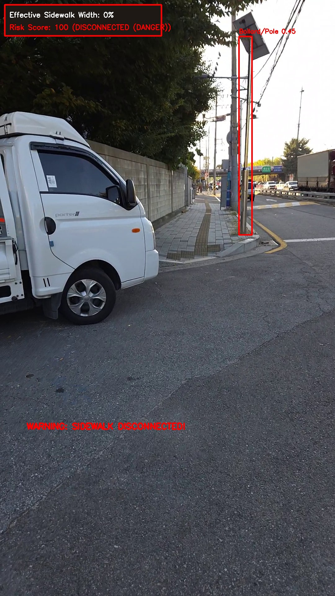

2구간 · DANGER
이 위치와 겹치는 이전 점검 데이터가 없습니다.

- 거리
- 100.8–125.0m
- 영상 시각
- 70.4–87.8초
- 현재 위험도
- 평균 28.9 / 최대 100
- GPS
- 37.476720, 126.877800
- 현재 판정
- DISCONNECTED (DANGER)
test1.mp4
총 거리 125.0m
종합 안전 점수 94.1점
보고 구간 1개
이전·이후 비교 0개
이 위치와 겹치는 이전 점검 데이터가 없습니다.
